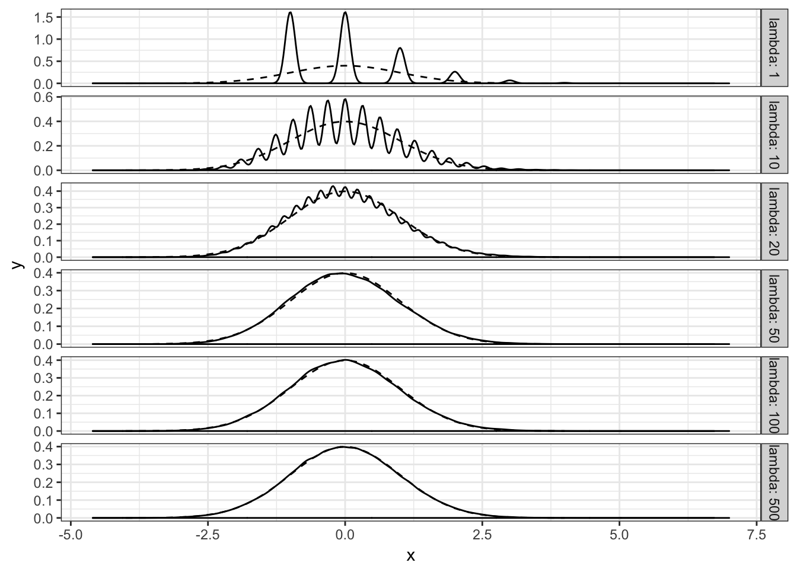
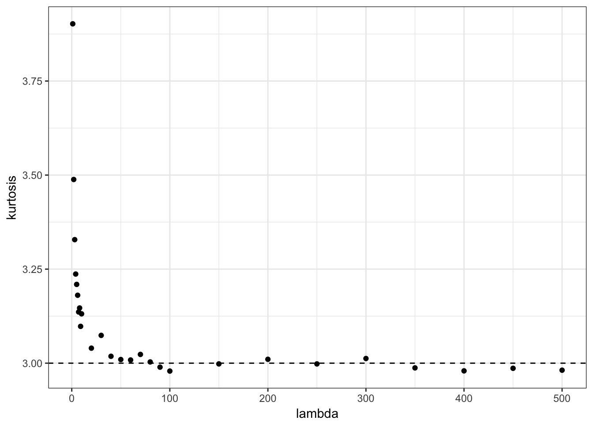
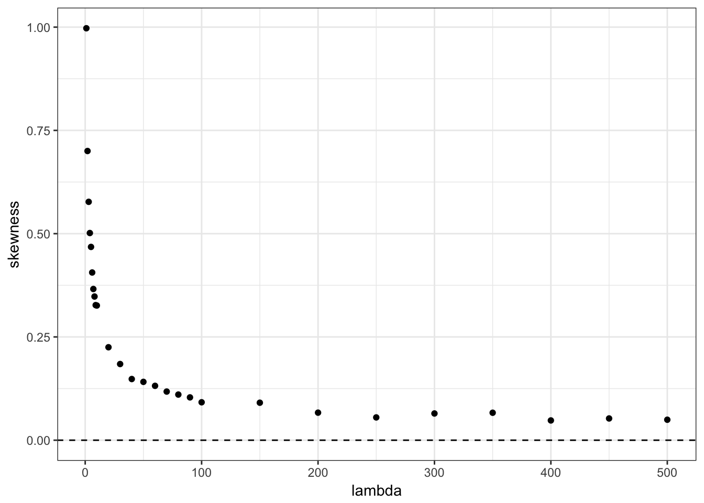
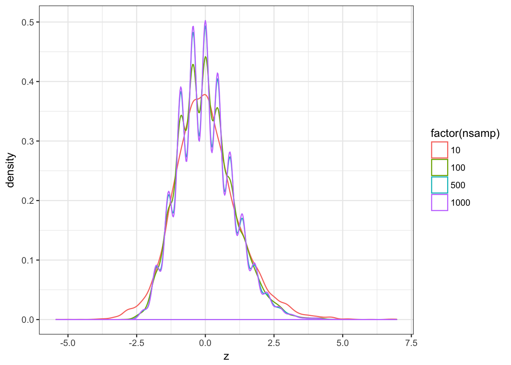

Tests on Counts
Sep 16, 2017 stats Rlibrary(ggplot2)
library(broom)
library(magrittr)
library(dplyr)
library(knitr)Poisson vs Normal distribution
When lambda is high enough
I think the “rule” is: if lambda is high enough, we can approximate a Poisson distribution with a Normal distribution.
pois.df = data.frame(lambda = rep(c(1, 10, 100, 500),
10000))
pois.df %<>% mutate(x = rpois(n(), lambda))
ggplot(pois.df, aes(x = x)) + geom_density() + facet_wrap(~lambda,
scale = "free")
library(moments)
pois.ks = lapply(c(1:10, seq(20, 100, 10), seq(150,
500, 50)), function(ll) {
x = rpois(1e+05, ll)
data.frame(lambda = ll, kurtosis = kurtosis(x),
skewness = skewness(x))
})
pois.ks = do.call(rbind, pois.ks)
ggplot(pois.ks, aes(x = lambda, y = kurtosis)) + geom_point() +
theme_bw() + geom_hline(yintercept = 3, linetype = 2)
ggplot(pois.ks, aes(x = lambda, y = skewness)) + geom_point() +
theme_bw() + geom_hline(yintercept = 0, linetype = 2)
When using mean/variance across enough samples
If we compare a variable to its mean and variance across enough samples, the central limit theorem predicts that the transformed variable should follow a Normal.
cl.df = lapply(1:10000, function(ii) {
samp1 = rpois(1, 5)
samps = rpois(1000, 5)
data.frame(nsamp = c(10, 100, 500, 1000), z = c((samp1 -
mean(samps[1:10]))/sd(samps[1:10]), (samp1 -
mean(samps[1:100]))/sd(samps[1:100]), (samp1 -
mean(samps[1:500]))/sd(samps[1:500]), (samp1 -
mean(samps[1:1000]))/sd(samps[1:1000])))
})
cl.df = do.call(rbind, cl.df)
ggplot(cl.df, aes(z, colour = factor(nsamp))) + geom_density() +
theme_bw()
kurtosis(cl.df$z)## [1] 3.770479skewness(cl.df$z)## [1] 0.4460681